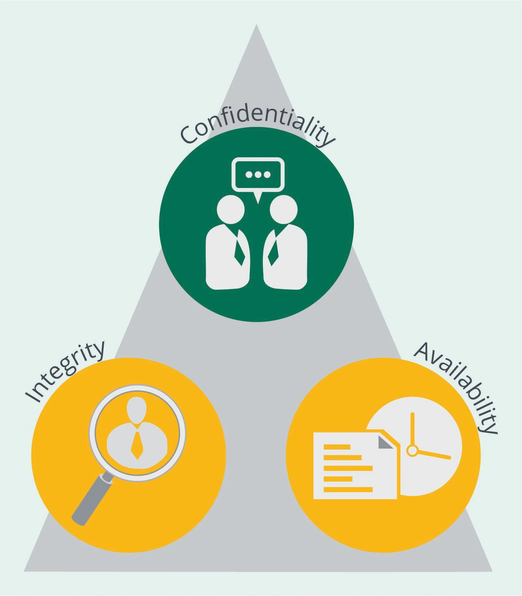

In this section, we will discuss the foundations of security
objectives—confidentiality, integrity, and availability (CIA). CIA and a recent
enhanced focus on privacy drive underlying requirements for security in software.
Objectives
Define core security objectives for software development.
Describe the information security triad and explain the main mechanisms of
confidentiality, integrity, and availability of information.
Characterize the relationship between information security and data privacy.
Identify regulatory considerations that impact software security.
Overview
The CIA triad provides a framework for security policies,
procedures, and security objectives for all software security activities and efforts
throughout the software development life cycle (SDLC). Security practitioners should
understand the relationship between security and data privacy while acknowledging
key differences.
The Three Rs of Software
One simple way to describe the secure software objectives is to
build or acquire software that satisfies three Rs: Software must be reliable,
resilient, and recoverable.
Reliability means that software should function as expected.
Resiliency means that software should withstand misuse and attack.
Recoverability means having the ability for normal business operations
restoration with minimal disruption.
The CIA Triad
The information security triad of confidentiality,
integrity, and availability (CIA) provides a framework for information
security policies and the objectives for all software security activities and
efforts throughout the .
The opposite of Disclosure-Alteration-Destruction (DAD):
Destruction is the opposite of availability.
Alteration is the opposite of integrity.
Disclosure is the opposite of confidentiality.

Figure 1: CIA Triad
Confidentiality
Confidentiality is one core security objective related to
software security. One definition of confidentiality, can be extracted from
NIST’s FIPS 199—Standards for Security Categorization of Federal Information and
Information Systems dedicated to information security, “Preserving
authorized restrictions on information access and disclosure, including means for
protecting personal privacy and proprietary information.”
Goals of Confidentiality
Sensitive data and information must be protected at all times
whether in transit across a network, at rest on storage media, or while being
leveraged by an application. Security practitioners rely on various mechanisms to
mitigate risks involving unauthorized disclosure. Below are a few security controls
related to safeguarding software and sensitive information.
Security Controls for
Confidentiality
Protecting confidentiality based on organizationally defined
criteria may require support from several kinds of security controls, including
encryption and access controls.
Encryption
Encryption is an example of a security control mechanism. Think
about the encryption of data in transit and technologies that might be used for this
purpose (e.g., TLS 1.3), or encryption of data at rest, in the database using AES
256 through Transparent Data Encryption (TDE). Examples are nearly infinite.
Transport Layer Security (TLS) is in common use. According to
NIST Special Publication 800-52—Guidelines for the Selection, Configuration, and
Use of Transport Layer Security Implementations, “TLS protocols are used to
secure communications in a wide variety of online transactions, such as financial
transactions (e.g., banking, trading stocks, e-commerce), healthcare transactions
(e.g., viewing medical records or scheduling medical appointments), and social
transactions (e.g., email or social networking). Any network service that handles
sensitive or valuable data, whether it is personally identifiable information (PII),
financial data, or login information, needs to adequately protect that data.” These
examples represent overt methods of ensuring the confidentiality of sensitive data.
The primary objective of encryption is to limit data comprehension to authorized
parties while deterring adversaries by creating a high —theeffort or time required to
overcome a protective measure.
Security practitioners understand that encryption is not a
solution to all problems, and other confidentiality methods including anonymization,
tokenization, and masking may offer acceptable alternatives depending on the goals
and objectives. Each of these confidentiality methods will be presented in
subsequent domains.
Access Controls
Confidentiality supports the principle of “least privilege” by
allowing access only to authorized individuals, processes, or systems, and only on a
need-to-know basis. Think about which systems employees of your organization are
authorized to access. What information is available in these systems? Is there
protected personal information accessed through these systems?
As a principle, anything that needs to be trusted has an
identity. Identities can have identifiers such as email addresses, IP addresses or a
public key. Identity and access management (IAM) includes people, processes and
systems that are used to manage access to enterprise resources by assuring that the
identity of an entity is verified and then granting the correct level of access
based on the protected resource, which assures identity and other contextual
information.
Federated Identities
Federated identity management provides the policies, processes
and mechanisms to manage identity and trusted access to systems across
organizations.
The technology of federation is much like that of Kerberos
within an Active Directory domain, where a user logs on once to a domain controller,
is ultimately granted an access token, and uses that token to gain access to systems
for which the user has authorization. The difference is that while Kerberos works
well in a single domain, federated identities allow for the generation of tokens
(authentication) in one domain and the consumption of these tokens (authorization)
in another domain.
Figure 2: Federated Identity Management Options
Identity Provider/Relying Party
In a federated environment, there is an identity provider and a
relying party. The identity provider holds the identities and generates a token for
known users. The relying party is the service provider and consumes these tokens. In
a cloud environment, it is desirable for the organization itself to maintain all
identities and act as the identity provider.
Identification
In the public cloud, identity providers increasingly adopt
OpenID, Security Assertion Markup Language (SAML), and OAuth as standard protocols.
This includes big-name social media services. Microsoft’s Active Directory is a
prevalent example. Relevant standard protocols include SAML and WS-Federation.
Authentication
Authentication, the process of establishing with adequate
certainty the identity of an entity, is a function of the identity provider. This is
done through factors such as passwords, key generators, and biometrics. Multifactor
authentication is often advised for high-risk roles such as administrative
functions.
Authorization
Authorization is the process of granting access to resources.
This can be based on identities, attributes of identities such as role, and
contextual information such as location and time of day. Authorization is enforced
near the relevant resource, at the policy enforcement point. In a federated identity
model, this is typically at the relying party.
Access Decisions
Examples of access decisions questions include:
Can a device be allowed to receive an IP address on the local network?
Can a web server communicate with a particular database server?
Can a user access a certain application, a function within an application or
data within an application?
Can an application access data from another application?
These access rights might be detailed down to the individual row
of a database. What is clear from these examples is that access decisions can be
enforced at various policy enforcement points with various technologies. Individual
policies are controlled at the policy decision point. Communicating these policies
can be done through standard protocols such as Extensible Access Control Markup
Language (XACML).
Federation Standards
Standards that support the federation space include:
Security Assertion Markup Language 2.0 (SAML 2.0)
Open Authorization (OAuth) 2.0 Authorization Framework
OpenID Connect
Security Assertion Markup Language 2.0 (SAML
2.0).SAML defines an XML-based framework for describing
and exchanging security information between online business relationships. This
security information is maintained in SAML assertions that work between trusted
security domain boundaries. The SAML standard follows a prescribed set of rules for
requesting, creating, communicating and using SAML assertions.
Open Authorization (OAuth) 2.0 Authorization Framework.
RFC 6749 defines OAuth Authorization Framework to enable a third-party
application for obtaining limited access to an HTTP service, either on behalf of a
resource owner by orchestrating an approval interaction between the resource owner
and the HTTP service, or by allowing the third-party application to obtain access on
its own behalf.
OpenID Connect. OpenID Connect is an interoperable
authentication protocol based on the OAuth 2.0 standard. It makes use of JSON/REST
to send and receive messages with the intent of simplification and uncomplication.
The focus of OpenID Connect is to confirm the identity of the person consuming
service from a browser or native application, thus allowing developers to
authenticate users across different websites and applications. It represents the
third iteration of OpenID. The first iteration was OpenID, which did not experience
substantive commercial use. The next iteration was OpenID 2.0, which offered better
security but was dependent upon XML. OpenID 2.0 also dictated that relying parties
could be web pages but not native applications.
Biometrics
The oldest biometric is, arguably, a human’s recognition of
another human by face or by voice. Computer systems have been capable of using
biometrics (e.g., touch ID, face ID) for the purposes of identification or
authentication for some years, but the perception of biometrics as being less
acceptable compared to the traditional password approach may no longer be true.
Perhaps more frequently observed in the mobile world, usage of biometrics has gained
momentum.
Access authentication via biometrics starts by making baseline
measurements of the required characteristics and storing them as part of the profile
associated with that user’s identity in the system. In most digital ID systems,
these readings are then cryptographically hashed so they can then be placed onto a
smart card or other physical security token.
Steganography
Steganographic techniques used for the protection of
confidentiality are considered covert mechanisms, as they are generally designed to
conceal the presence of information. An example would be hiding a message inside an
image by manipulating the RGB values of the pixels or the file header metadata. This
method is largely based on obscurity. Good security practitioners understand
steganography conceptually while acknowledging security delivered through obscurity
is never adequate security.
Compromising Confidentiality
Confidentiality can be compromised in numerous ways:
Network sniffing. The capturing, decoding, inspecting, and interpreting
of information inside a network data packet on a Transmission Control
Protocol/Internet Protocol (TCP/IP) network to steal information such as user
IDs, passwords, network details, and credit card numbers. Sniffing is considered
a “passive” attack because the attackers can be silent/invisible on the network,
making it difficult to detect, thus a dangerous type of attack.
Shoulder surfing. This occurs when an individual looks over another
individual’s shoulder, watching keystrokes/data as they appear on the screen. A
common concern with shoulder surfing is at ATMs. Notice that many ATMs warn the
customer to cover the number pad while entering their PIN.
Social engineering. This is tricking an authorized user into revealing
confidential information, such as company trade secrets. For example, a person
using social engineering to break into a computer network would gain the
confidence of an authorized user and leverage that person to compromise network
security.
Hacking. This is bypassing a system’s access controls by taking
advantage of security weaknesses in the system. Hackers are often able to
discover the passwords of authorized users, create copies of inadequately
protected files, and place them in areas of the system where unauthorized
persons can access them.
Masquerading. This is an (authorized or unauthorized) system user
posing as another authorized user. By obtaining and using the authorized user’s
password, the masquerader gains access to the authorized user’s confidential
files to read and/or copy them.
Unprotected downloaded files. This can compromise confidential
information if, in the process, files are moved from the secure environment of a
host computer to an unprotected microcomputer for local processing.
Trojan. Typically, this is a malicious clickable attachment that is
disguised as some other file. Once executed, the system resources are
compromised in numerous ways.
Unencrypted (cleartext) data. Sometimes due to misconfiguration or
other failures, information such as passwords or sensitive information such as
personal health information (PHI) or personal identity information (PII) could
be stored or transmitted in a way that is easily intercepted and viewed by
authorized parties.
Safeguarding Confidentiality
Safeguarding confidentiality within applications typically
involves multiple layers of defense. Not all defensive controls involve technical
safeguards such as encryption. A few nontechnical examples include:
Additional security awareness and prevention training for individuals with
access to sensitive information
Minimizing the retention of sensitive information to reduce risk and attack
surface
Limiting physical access to infrastructure such as datacenter resources
Establishing policies and procedures such as secure disposal processes for
servers and media
Integrity
Integrity is another core security objective within software
security. The primary objective is to prevent unauthorized (intentional or
unintentional) modification of organizational data and information. NIST defines
data integrity as, “A property whereby data has not been altered in an unauthorized
manner since it was created, transmitted, or stored.1”
Data integrity can be summarized in three principles:
Modifications are not made to data by unauthorized subjects (personnel or
processes).
Unauthorized modifications are not made to data by authorized subjects.
The data is internally and externally consistent.
Technical Controls for Integrity
Various mechanisms are relied on to mitigate the risk of
unauthorized alteration. Among these are hashing, digital signatures, and code
signing.
Hashing
works by using cryptographic hash
functions to create a fixed-size digest from variable length message (input). Good
cryptographic hash functions are deterministic and always produce the same digest
from the same input. One property of good cryptographic hash functions is that any
change to the message, no matter how small, would result in a significant change in
the produced digest. Hashing provides an opportunity to detect undesired alterations
including tampering. The table below highlights two properties of hashing. Firstly,
taking the hash of the same data multiple times should produce the same hash.
Secondly, a slight change in the message results in a significant change in the SHA
256 digest.
The ability to bind a signature to an identity is a valuable
technical control for integrity. According to the Cybersecurity and Infrastructure
Security Agency, a —atype of electronic
signature—is a mathematical algorithm that validates the authenticity and integrity
of emails, credit card transactions, and digital documents through a unique virtual
fingerprint that identifies users and protects information. In emails, the email
content itself becomes part of the digital signature. Digital signatures are
significantly more secure than other forms of electronic signatures.” Binding a
signature to an identity provides assurance of integrity.
Code Signing
Application of a digital signature to the code is a common
mechanism of protecting software primarily during the distribution and maintenance
phases. This mechanism can provide assurance that the code has not been tampered
with (integrity assurance) and identify the entity that was in control of the code
at the time of signing (authenticity assurance). This is an important consideration
in the software supply chain.
Integrity in the Life Cycle
Integrity involves maintaining the consistency, accuracy, and
trustworthiness of data over the entire life cycle. To preserve integrity in its
most basic form, practices are introduced to minimize the opportunity for
unauthorized alterations and to prevent erroneous changes by authorized subjects.
One example of such a practice is integrity in source code
version control. Although version control may apply to all sorts of collections of
information, software professionals can certainly relate to the need to subject
their source code to version control practices and tools designed for that purpose.
Changes are identified and tracked through revision indicators using letter codes,
numbers, and other symbols. The changes are time stamped and the subjects who make
those changes are tracked. Revisions are compared and revisions are restored or
merged. There are various proprietary and open-source tools available for this
purpose, such as CVS, Subversion, GIT, and others.
Integrity and Access Control
Integrity compromises include unauthorized access and actions
taken by unauthorized individuals (e.g., hackers) or authorized individuals such as
staff (whether with malicious intentions or unintentionally). When discussing access
control, we often refer to the requester of resources “individuals or services” as
the “subject” and the resources being requested as an object. Access control
mechanisms, intrusion detection and prevention, digital signatures, and code signing
are among the mechanisms used to combat corruption or modification to data.
Integrity of the Trusted Computing
Base (TCB)
Many definitions have been provided for the Trusted Computing
Base (TCB). For our discussion and purposes, it would represent the collective of
all the hardware, software, firmware, processes and resources that are critical to
security and allow for the information security policy to be enforced on a system.
In other words, TCB is responsible for maintaining the confidentiality and integrity
of data. With that broad definition, if the TCB integrity is compromised (i.e., if
malware is running), it can be assumed that security policy can no longer be
enforced. A dedicated microcontroller called Trusted Platform Module (TPM) is an
example of a cryptographic key that can be used to attest to the integrity of a boot
process. Microsoft BitLocker would be an example that takes advantage of the TPM
chip.
Compromising Integrity
As with confidentiality, integrity can be compromised by
hackers, unauthorized users, and malware (e.g., Trojans and Malware). Each of these
threats can lead to unauthorized changes to systems, software, and data. For
example, authorized users can corrupt data and programs accidentally provided
activities are not managed and controlled properly.
Safeguarding Integrity
The following three basic principles are relevant to
establishing integrity controls:
Access is based on need-to-know
Separation of duties
Rotation of duties
Need-to-know
Subjects should be granted access only to those files and
programs that they absolutely need to perform their assigned job functions. NIST
defines as a decision made by an
authorized holder of official information that a prospective recipient requires
access to specific official information to carry out official duties.
Separation of Duties
To achieve separation of duties, the objective is to ensure that
no single subject has control of a transaction from beginning to end; two or more
subjects should be responsible for performing it. According to NIST, separation of
duties refers to the principle that no user should be given enough privileges to
misuse the system on their own. Separation of duties can be enforced statically
through access control rules or dynamically using considerations like time of day.
Rotation of Duties
The for job assignments
allows for the detection of fraudulent activities. Employees in critical or
financial roles should be alternated periodically so that nefarious activities
cannot be conducted across time without collusion. Rotation of duties includes other
advantages to the organization, including succession planning (i.e., minimizing loss
of knowledge after losing a key employee) and availability of backup personnel.
Availability
is another core security
objective within software security. Security practitioners must ensure reliable and
timely access to the data and computing resources must be ensured. Availability
concepts apply to many aspects of an organization's infrastructure including
hardware, software, network resources (including bandwidth), data, and utilities
such as power, for example.
Goals of Availability
To meet availability goals, it is essential to have adequate
infrastructure and planning for achieving timely, reliable access to information for
intended entities. Resources availability is organizationally defined based on
business needs. Security practitioners must ensure the correct resources are
available within the correct amount of time for the correct subjects.
Security Controls for
Availability
A system or software should be designed and implemented to
recover from disruptions in a secure and quick manner to avoid negative impacts to
productivity and business continuity. There are several concepts that can be used to
achieve availability.
Redundancy. Mainly continuing the running of an organization even with
the absence/failure of one important component. Redundancy in DBMS means copying
data within a database or using a separate data storage technology in two
separate places.
Failover. Switching to a redundant or standby computer server, system,
hardware component, or network upon the failure or abnormal termination of the
previously active application, server, system, hardware component, or network.
Fault tolerance. The system remains working as expected even when some
of its components are failing.
RAID. A redundant array of independent disks (RAID) is a data storage
virtualization technology that combines multiple physical disk-drive components
into a single logical unit for the purposes of data redundancy, performance
improvement, or both.
High-availability clusters (failover clusters). These are groups of
computers that support server applications that can be reliably utilized with a
minimum of downtime. They operate by using high-availability software to harness
redundant computers in groups or clusters that provide continued service when
system components fail.
Replication. This is the process of storing data in more than one site
or node. As an example, directory services replication is often used to prevent
the loss of a single server which would otherwise cause the directory service to
become unavailable.
Compromising Availability
One threat to availability includes attacks that prevent authorized access to resources or
the delaying of time-critical operations. Another term that describes this is a
, which, as the name suggests, is a
denial-of-service technique that leverages multiple nodes to launch an attack. Often
natural disasters based on geography are more common disruptors to availability
(e.g., hurricanes, tornados, flooding).
Losses of availability are countered by contingency planning,
which helps minimize the time that business capabilities, including software
systems, remain unavailable.
Physical controls can assist with maintaining availability.
Physical controls prevent unauthorized persons from entering a facility and
accessing computing resources. Various fire and water suppression mechanisms, hot
and cold sites for use in alternative-site processing, and off-site backup storage
facilities. Physical controls should be leveraged in conjunction with continuity
policies and procedures. Organizations should include availability considerations
early within the design phase for systems and software. Many organizations are
adopting cloud and hybrid infrastructure approaches. Some cloud services offer
mitigation capabilities to protect against threats to availability.
Safeguarding Availability
Software services often represent mission-critical components
within organizational infrastructure. For this reason, organizational business
continuity and disaster recovery efforts must include considerations for
mission-critical application recovery or reconstitution including systems, software,
and data.
Disaster Recovery
Each organization has unique business requirements, operating
constraints, and risk tolerance. Organizational risk tolerance for interruption of
mission-critical services and data loss will ultimately drive the disaster recovery
strategy for the organization. Think about why determining this level of tolerance
for interruption and/or loss is a business/mission decision instead of an
IT/security decision. Effective disaster recovery is interdependent on internal
policies and external mandates. For example, and
requirements would dictate disaster recovery requirements and strategies.
Cloud Disaster Recovery
The use of cloud services for disaster recovery purposes is
becoming commonplace. Depending on a company’s requirements and obligations, and its
appetite for service outage or data loss, solutions offered by cloud service
providers (CSPs) should be taken into serious consideration. Global CSPs provide
physical data centers across the globe. They likely offer availability zones made up
of one or more data centers equipped with independent power, cooling, and
networking. These availability zones could allow customers to run their
mission-critical applications with high availability and low-latency replication.
Taking this further, CSPs may also offer regions that typically consist of two or
more availability zones intended to ensure operational redundancy. For example, it
would be common for an organization to have its production environment in one region
and its in a different
region. Global CSPs may have tens of these regions in various countries throughout
the globe and can cater to various requirements.
Contingency Planning
Contingency planning is another topic of focus in most security
frameworks and standards. Contingency planning may involve business resumption
planning, alternative site processing, or simply disaster recovery planning.
Contingency planning provides an alternative means of processing, thereby ensuring
availability. Physical, technical, and administrative controls (safeguards and
countermeasures) are important aspects of security initiatives that address
availability.
Think about why contingency plans may be ineffective. Factors
could include incomplete strategy, outdated information, and untested procedures. In
the context of continuity and contingency planning, the risk associated with a
single point of failure or compromise should be considered. In every realm of
security—software security included—the need for identifying and addressing such
points is critical. Keep in mind that many times these single points of failure are
introduced by the architectural and design decisions that we make. In many cases,
elimination of failure points could involve a significant level of effort.
Privacy
Information security and data privacy are closely related.
However, there are distinct differences that security practitioners should
understand. Think about a scenario where an organization’s layers of defense (e.g.,
restricted access control, encryption of data at rest, and data retention policies)
have successfully secured data, but have simultaneously violated privacy law by
collecting user data without explicit consent.
Globally, there are numerous laws, regulations, and other legal
requirements for organizations and entities to protect the security and privacy of
digital and other information assets. Across multiple territories and geographic
locations, privacy laws and regulations require the implementation of measures to
adequately protect personal and personally identifiable information (PII). This
includes protection from unauthorized access, modification, loss, amendment, or
alteration. Furthermore, failure to protect PII potentially results in legal
challenges, fines, and imposed actions (including restrictions around the processing
and collection of personal information). When these consequences are added to the
possibility of nonlegal impacts such as reputational damage, loss of consumer and
customer confidence, and competitive disadvantages, they exert significant pressure
on entities to display compliance and due care.
Elements of Security Design
Accountability, auditing, and logging are critical aspects of
security in software. Logs should avoid recording sensitive data where and when such
avoidance is possible. Logs must be collected from various sources, normalized, and
correlated. Digital signatures can help with the assurance of integrity and
authenticity. Blockchain enables global visibility of a shared transaction
accounting ledger and has applications in many areas.
Accountability
Accountability is the ability to determine the actions and
behaviors of a subject within a system and to identify that particular subject. It
is related to the concept of nonrepudiation, wherein a subject cannot successfully
deny the performance of an action. Auditing and logging are important activities
that contribute to accountability.
Auditing
Auditing answers the question, “Who (subject) did what (action)
when (timestamp) and where (object)?” Auditing can be in terms of a one-time or
periodic event to evaluate security, or an ongoing activity that continuously
examines the system/users. Audit trails are sets of records that collectively
provide documentary evidence of processing. They are used to aid in tracing from
original transactions forward to related records and reports and/or backward from
records and reports to their component source transactions.
Logging
The main function of logging is to provide documentary evidence
regarding the sequence of events, and as such, auditing may rely on it. In fact,
many security-relevant activities within the enterprise rely on proper logging of
events of interest. Logs also enable a vast number of stakeholders to perform their
job duties. Stakeholders include administrators, developers, support staff, and
certainly security, privacy, and compliance personnel, among many others—each with
their own set of needs and expectations from these logs. Acknowledging this broad
range of subjects interested in logs underscores the need to identify these
stakeholders and capture their requirements during the early stages of the software
development life cycle. This crucial input is frequently overlooked, much to the
detriment of decisions made without it.
This discussion also provides an opportunity to make a
distinction between application trace logs, which are primarily intended for
software developers’ debugging and troubleshooting purposes, and other types of logs
that serve various other purposes. Further, it is important to understand that logs
in general may, and likely will, contain sensitive information captured
intentionally or accidentally. This can result in serious issues if the logs are
exposed.
For example, consider an Android text messaging app that
transmits diagnostic information captured from the device in the logs for the
purpose of troubleshooting by the support and engineering teams. Now imagine that
the information captured in the logs also included the physical location of the
device and/or the body of the text message that was transmitted by the app. This
hypothetical scenario is certainly possible in real life, as developers tend to
think the more information they can include in these logs, the better the logs will
serve the purpose of troubleshooting.
Security Information and Event
Management (SIEM)
There are various system components that may generate logs,
including error logs, event logs, and systems logs among other categories. A
challenge has always been the fact that logs come from diverse sources and increase
in size rapidly. Reviewing the logs for the purpose of identifying anomalies (i.e.,
signs of compromise) without specialized solutions and technologies would be no easy
task, and that is where SIEMs come into the picture. Use cases include security
monitoring, incident investigation and response, and advanced threat detection among
others.
Nonrepudiation
According to NIST, protects against an
individual falsely denying having performed a particular action, including the
capability to determine whether a given individual took a particular action such as
creating information, sending a message, approving information, and receiving a
message. Simply put, it ensures that actions taken (intentional or unintentional)
cannot be denied. Mechanisms relevant to this objective include digital signatures
and blockchain technology among others.
Digital Signatures
Digital signatures were introduced in the discussion on
Integrity. We revisit that topic here to explain how they work—and that requires an
understanding of the basics of hashing and asymmetric algorithms. For now, keep in
mind that creating a digital signature includes the following steps:
Using a one-way cryptographic hash function to create a digest from the input.
Encrypting the digest (using an asymmetric algorithm) that was created from the
previous step, using the private key of the signer.
See the figure below to observe the digital signing process.
Figure 3: Creating a Digital Signature
Blockchain
Blockchain enables global visibility of a shared transaction
accounting ledger. Initially used to establish and manage cryptocurrencies,
important business value can be delivered by its inherent capabilities. In brief, it
involves storing a time-stamped sequence of immutable records (blocks) in public
databases connected as peers in a network (chains).
Among features of blockchain that have led to the expansion of
the possibilities and the applications of this technology are:
Protection against unauthorized changes, as new blocks may only be added to the
end of the chain, and once added they can’t be removed.
Redundancy and elimination of single point of failure, as independent and
autonomous nodes store redundant copies of a blockchain.
Transparency, as blockchains are publicly available for viewing and secure audit
trails.
Governance, Risk, and Compliance
(GRC)
Governance, Risk, and Compliance (GRC) is a discipline method to
correlate business objectives and IT infrastructure while controlling risks by
addressing regulations. GRC has software-centered considerations since facilitation
often includes software tools and processes to centralize organizational activities.
Each aspect—governance, risk management, and compliance are defined briefly below:
Governance establishes policies and procedures for achieving business goals.
Risk management identifies and then reduces risk to an acceptable level.
Compliance is ensuring that the organization identifies and satisfies any
applicable laws and regulations.
Software Regulatory
Considerations
Regulatory considerations are changing constantly, and an entire
body of knowledge and specialization would be required to adequately cover
international regulatory considerations. Below are a few cybersecurity and software
tangential laws to understand as a software security practitioner.
U.S. Considerations
IoT Cybersecurity Improvement Act of 2020
California Consumer Privacy Act (CCPA) of 2018
Consumer Privacy Protection Act (CPPA) of 2017
Federal Cybersecurity Laws of 2014
Health Insurance Technology for Economic and Clinical Health Act (HITECH) of
2009
Sarbanes-Oxley Act (SOX) of 2002
Federal Information Security Management Act (FISMA) of 2002
Children’s Online Privacy Protection Act (COPPA) of 1998
National Information Infrastructure Protection Act of 1996
Health Insurance Portability and Accountability Act (HIPAA) of 1996
Payment Card Industry Data Security Standard (PCI DSS) of 1996
Communications Assistance for Law Enforcement Act (CALEA) of 1994
Non-U.S. Considerations
EU Cyber Solidarity Act proposed 2023
EU Cyber Resilience Act (CRA) proposed 2022
EU Cybersecurity Act of 2019
EU General Data Protection Regulation (GDPR) of 2018
India Information Technology (IT) Act of 2000
Jurisdiction Considerations
Jurisdiction, power of court to adjudicate legal issues or
execute legal orders, has important implications for GRC. Organizational software is
either hosted within cloud infrastructure or interacts with various entities via the
internet. Communications may transverse multiple countries while involving the
interaction of citizens from many different legal systems.
Security practitioners must understand and advise that laws
apply within internet infrastructure and cloud. In some extreme cases, laws may
conflict between jurisdictions. Although the Internet lacks physically defined
boundaries, applications are still bound to geographical and jurisdictional
boundaries in which they operate. Some considerations which make jurisdiction
complex for internet enabled applications include:
National, regional, or state laws for users
National, regional, or state laws for transactional data
National, regional, or state laws for hosting environments
Software-Facilitated Compliance
Security practitioners need to safeguard the operational
security of development environments while ensuring that software developed is
secure to an acceptable level. Security practitioners leverage software tools to aid
with these objectives, which may include GRC. Further, organizations must leverage
automation and software tools to centralize and streamline processes. There are
several commercially viable GRC products that can automate and reduce documentation.
Core Concepts (1.1)
In this section, we will discuss the foundations of security objectives—confidentiality, integrity, and availability (CIA). CIA and a recent enhanced focus on privacy drive underlying requirements for security in software.
Objectives
Overview
The CIA triad provides a framework for security policies, procedures, and security objectives for all software security activities and efforts throughout the software development life cycle (SDLC). Security practitioners should understand the relationship between security and data privacy while acknowledging key differences.
The Three Rs of Software
One simple way to describe the secure software objectives is to build or acquire software that satisfies three Rs: Software must be reliable, resilient, and recoverable.
The CIA Triad
The information security triad of confidentiality, integrity, and availability (CIA) provides a framework for information security policies and the objectives for all software security activities and efforts throughout the . The opposite of Disclosure-Alteration-Destruction (DAD):
Figure 1: CIA Triad
Confidentiality
Confidentiality is one core security objective related to software security. One definition of confidentiality, can be extracted from NIST’s FIPS 199—Standards for Security Categorization of Federal Information and Information Systems dedicated to information security, “Preserving authorized restrictions on information access and disclosure, including means for protecting personal privacy and proprietary information.”
Goals of Confidentiality
Sensitive data and information must be protected at all times whether in transit across a network, at rest on storage media, or while being leveraged by an application. Security practitioners rely on various mechanisms to mitigate risks involving unauthorized disclosure. Below are a few security controls related to safeguarding software and sensitive information.
Security Controls for Confidentiality
Protecting confidentiality based on organizationally defined criteria may require support from several kinds of security controls, including encryption and access controls.
Encryption
Encryption is an example of a security control mechanism. Think about the encryption of data in transit and technologies that might be used for this purpose (e.g., TLS 1.3), or encryption of data at rest, in the database using AES 256 through Transparent Data Encryption (TDE). Examples are nearly infinite.
Transport Layer Security (TLS) is in common use. According to NIST Special Publication 800-52—Guidelines for the Selection, Configuration, and Use of Transport Layer Security Implementations, “TLS protocols are used to secure communications in a wide variety of online transactions, such as financial transactions (e.g., banking, trading stocks, e-commerce), healthcare transactions (e.g., viewing medical records or scheduling medical appointments), and social transactions (e.g., email or social networking). Any network service that handles sensitive or valuable data, whether it is personally identifiable information (PII), financial data, or login information, needs to adequately protect that data.” These examples represent overt methods of ensuring the confidentiality of sensitive data. The primary objective of encryption is to limit data comprehension to authorized parties while deterring adversaries by creating a high —the effort or time required to overcome a protective measure.
Security practitioners understand that encryption is not a solution to all problems, and other confidentiality methods including anonymization, tokenization, and masking may offer acceptable alternatives depending on the goals and objectives. Each of these confidentiality methods will be presented in subsequent domains.
Access Controls
Confidentiality supports the principle of “least privilege” by allowing access only to authorized individuals, processes, or systems, and only on a need-to-know basis. Think about which systems employees of your organization are authorized to access. What information is available in these systems? Is there protected personal information accessed through these systems?
As a principle, anything that needs to be trusted has an identity. Identities can have identifiers such as email addresses, IP addresses or a public key. Identity and access management (IAM) includes people, processes and systems that are used to manage access to enterprise resources by assuring that the identity of an entity is verified and then granting the correct level of access based on the protected resource, which assures identity and other contextual information.
Federated Identities
Federated identity management provides the policies, processes and mechanisms to manage identity and trusted access to systems across organizations.
The technology of federation is much like that of Kerberos within an Active Directory domain, where a user logs on once to a domain controller, is ultimately granted an access token, and uses that token to gain access to systems for which the user has authorization. The difference is that while Kerberos works well in a single domain, federated identities allow for the generation of tokens (authentication) in one domain and the consumption of these tokens (authorization) in another domain.
Figure 2: Federated Identity Management Options
Identity Provider/Relying Party
In a federated environment, there is an identity provider and a relying party. The identity provider holds the identities and generates a token for known users. The relying party is the service provider and consumes these tokens. In a cloud environment, it is desirable for the organization itself to maintain all identities and act as the identity provider.
Identification
In the public cloud, identity providers increasingly adopt OpenID, Security Assertion Markup Language (SAML), and OAuth as standard protocols. This includes big-name social media services. Microsoft’s Active Directory is a prevalent example. Relevant standard protocols include SAML and WS-Federation.
Authentication
Authentication, the process of establishing with adequate certainty the identity of an entity, is a function of the identity provider. This is done through factors such as passwords, key generators, and biometrics. Multifactor authentication is often advised for high-risk roles such as administrative functions.
Authorization
Authorization is the process of granting access to resources. This can be based on identities, attributes of identities such as role, and contextual information such as location and time of day. Authorization is enforced near the relevant resource, at the policy enforcement point. In a federated identity model, this is typically at the relying party.
Access Decisions
Examples of access decisions questions include:
These access rights might be detailed down to the individual row of a database. What is clear from these examples is that access decisions can be enforced at various policy enforcement points with various technologies. Individual policies are controlled at the policy decision point. Communicating these policies can be done through standard protocols such as Extensible Access Control Markup Language (XACML).
Federation Standards
Standards that support the federation space include:
Security Assertion Markup Language 2.0 (SAML 2.0). SAML defines an XML-based framework for describing and exchanging security information between online business relationships. This security information is maintained in SAML assertions that work between trusted security domain boundaries. The SAML standard follows a prescribed set of rules for requesting, creating, communicating and using SAML assertions.
Open Authorization (OAuth) 2.0 Authorization Framework. RFC 6749 defines OAuth Authorization Framework to enable a third-party application for obtaining limited access to an HTTP service, either on behalf of a resource owner by orchestrating an approval interaction between the resource owner and the HTTP service, or by allowing the third-party application to obtain access on its own behalf.
OpenID Connect. OpenID Connect is an interoperable authentication protocol based on the OAuth 2.0 standard. It makes use of JSON/REST to send and receive messages with the intent of simplification and uncomplication. The focus of OpenID Connect is to confirm the identity of the person consuming service from a browser or native application, thus allowing developers to authenticate users across different websites and applications. It represents the third iteration of OpenID. The first iteration was OpenID, which did not experience substantive commercial use. The next iteration was OpenID 2.0, which offered better security but was dependent upon XML. OpenID 2.0 also dictated that relying parties could be web pages but not native applications.
Biometrics
The oldest biometric is, arguably, a human’s recognition of another human by face or by voice. Computer systems have been capable of using biometrics (e.g., touch ID, face ID) for the purposes of identification or authentication for some years, but the perception of biometrics as being less acceptable compared to the traditional password approach may no longer be true. Perhaps more frequently observed in the mobile world, usage of biometrics has gained momentum.
Access authentication via biometrics starts by making baseline measurements of the required characteristics and storing them as part of the profile associated with that user’s identity in the system. In most digital ID systems, these readings are then cryptographically hashed so they can then be placed onto a smart card or other physical security token.
Steganography
Steganographic techniques used for the protection of confidentiality are considered covert mechanisms, as they are generally designed to conceal the presence of information. An example would be hiding a message inside an image by manipulating the RGB values of the pixels or the file header metadata. This method is largely based on obscurity. Good security practitioners understand steganography conceptually while acknowledging security delivered through obscurity is never adequate security.
Compromising Confidentiality
Confidentiality can be compromised in numerous ways:
Safeguarding Confidentiality
Safeguarding confidentiality within applications typically involves multiple layers of defense. Not all defensive controls involve technical safeguards such as encryption. A few nontechnical examples include:
Integrity
Integrity is another core security objective within software security. The primary objective is to prevent unauthorized (intentional or unintentional) modification of organizational data and information. NIST defines data integrity as, “A property whereby data has not been altered in an unauthorized manner since it was created, transmitted, or stored.1”
1 National Institute of Standards and Technology; https://csrc.nist.gov/glossary/term/data_integrity#:~:text=Definition(s)%3A,processing%2C%20and%20while%20in%20transit.; retrieved May 2023.
Goals of Integrity
Data integrity can be summarized in three principles:
Technical Controls for Integrity
Various mechanisms are relied on to mitigate the risk of unauthorized alteration. Among these are hashing, digital signatures, and code signing.
Hashing
works by using cryptographic hash functions to create a fixed-size digest from variable length message (input). Good cryptographic hash functions are deterministic and always produce the same digest from the same input. One property of good cryptographic hash functions is that any change to the message, no matter how small, would result in a significant change in the produced digest. Hashing provides an opportunity to detect undesired alterations including tampering. The table below highlights two properties of hashing. Firstly, taking the hash of the same data multiple times should produce the same hash. Secondly, a slight change in the message results in a significant change in the SHA 256 digest.
Table 1: Cryptographic Hash Function Output
Digital Signatures
The ability to bind a signature to an identity is a valuable technical control for integrity. According to the Cybersecurity and Infrastructure Security Agency, a —a type of electronic signature—is a mathematical algorithm that validates the authenticity and integrity of emails, credit card transactions, and digital documents through a unique virtual fingerprint that identifies users and protects information. In emails, the email content itself becomes part of the digital signature. Digital signatures are significantly more secure than other forms of electronic signatures.” Binding a signature to an identity provides assurance of integrity.
Code Signing
Application of a digital signature to the code is a common mechanism of protecting software primarily during the distribution and maintenance phases. This mechanism can provide assurance that the code has not been tampered with (integrity assurance) and identify the entity that was in control of the code at the time of signing (authenticity assurance). This is an important consideration in the software supply chain.
Integrity in the Life Cycle
Integrity involves maintaining the consistency, accuracy, and trustworthiness of data over the entire life cycle. To preserve integrity in its most basic form, practices are introduced to minimize the opportunity for unauthorized alterations and to prevent erroneous changes by authorized subjects.
One example of such a practice is integrity in source code version control. Although version control may apply to all sorts of collections of information, software professionals can certainly relate to the need to subject their source code to version control practices and tools designed for that purpose. Changes are identified and tracked through revision indicators using letter codes, numbers, and other symbols. The changes are time stamped and the subjects who make those changes are tracked. Revisions are compared and revisions are restored or merged. There are various proprietary and open-source tools available for this purpose, such as CVS, Subversion, GIT, and others.
Integrity and Access Control
Integrity compromises include unauthorized access and actions taken by unauthorized individuals (e.g., hackers) or authorized individuals such as staff (whether with malicious intentions or unintentionally). When discussing access control, we often refer to the requester of resources “individuals or services” as the “subject” and the resources being requested as an object. Access control mechanisms, intrusion detection and prevention, digital signatures, and code signing are among the mechanisms used to combat corruption or modification to data.
Integrity of the Trusted Computing Base (TCB)
Many definitions have been provided for the Trusted Computing Base (TCB). For our discussion and purposes, it would represent the collective of all the hardware, software, firmware, processes and resources that are critical to security and allow for the information security policy to be enforced on a system. In other words, TCB is responsible for maintaining the confidentiality and integrity of data. With that broad definition, if the TCB integrity is compromised (i.e., if malware is running), it can be assumed that security policy can no longer be enforced. A dedicated microcontroller called Trusted Platform Module (TPM) is an example of a cryptographic key that can be used to attest to the integrity of a boot process. Microsoft BitLocker would be an example that takes advantage of the TPM chip.
Compromising Integrity
As with confidentiality, integrity can be compromised by hackers, unauthorized users, and malware (e.g., Trojans and Malware). Each of these threats can lead to unauthorized changes to systems, software, and data. For example, authorized users can corrupt data and programs accidentally provided activities are not managed and controlled properly.
Safeguarding Integrity
The following three basic principles are relevant to establishing integrity controls:
Need-to-know
Subjects should be granted access only to those files and programs that they absolutely need to perform their assigned job functions. NIST defines as a decision made by an authorized holder of official information that a prospective recipient requires access to specific official information to carry out official duties.
Separation of Duties
To achieve separation of duties, the objective is to ensure that no single subject has control of a transaction from beginning to end; two or more subjects should be responsible for performing it. According to NIST, separation of duties refers to the principle that no user should be given enough privileges to misuse the system on their own. Separation of duties can be enforced statically through access control rules or dynamically using considerations like time of day.
Rotation of Duties
The for job assignments allows for the detection of fraudulent activities. Employees in critical or financial roles should be alternated periodically so that nefarious activities cannot be conducted across time without collusion. Rotation of duties includes other advantages to the organization, including succession planning (i.e., minimizing loss of knowledge after losing a key employee) and availability of backup personnel.
Availability
is another core security objective within software security. Security practitioners must ensure reliable and timely access to the data and computing resources must be ensured. Availability concepts apply to many aspects of an organization's infrastructure including hardware, software, network resources (including bandwidth), data, and utilities such as power, for example.
Goals of Availability
To meet availability goals, it is essential to have adequate infrastructure and planning for achieving timely, reliable access to information for intended entities. Resources availability is organizationally defined based on business needs. Security practitioners must ensure the correct resources are available within the correct amount of time for the correct subjects.
Security Controls for Availability
A system or software should be designed and implemented to recover from disruptions in a secure and quick manner to avoid negative impacts to productivity and business continuity. There are several concepts that can be used to achieve availability.
Compromising Availability
One threat to availability includes attacks that prevent authorized access to resources or the delaying of time-critical operations. Another term that describes this is a , which, as the name suggests, is a denial-of-service technique that leverages multiple nodes to launch an attack. Often natural disasters based on geography are more common disruptors to availability (e.g., hurricanes, tornados, flooding).
Losses of availability are countered by contingency planning, which helps minimize the time that business capabilities, including software systems, remain unavailable.
Physical controls can assist with maintaining availability. Physical controls prevent unauthorized persons from entering a facility and accessing computing resources. Various fire and water suppression mechanisms, hot and cold sites for use in alternative-site processing, and off-site backup storage facilities. Physical controls should be leveraged in conjunction with continuity policies and procedures. Organizations should include availability considerations early within the design phase for systems and software. Many organizations are adopting cloud and hybrid infrastructure approaches. Some cloud services offer mitigation capabilities to protect against threats to availability.
Safeguarding Availability
Software services often represent mission-critical components within organizational infrastructure. For this reason, organizational business continuity and disaster recovery efforts must include considerations for mission-critical application recovery or reconstitution including systems, software, and data.
Disaster Recovery
Each organization has unique business requirements, operating constraints, and risk tolerance. Organizational risk tolerance for interruption of mission-critical services and data loss will ultimately drive the disaster recovery strategy for the organization. Think about why determining this level of tolerance for interruption and/or loss is a business/mission decision instead of an IT/security decision. Effective disaster recovery is interdependent on internal policies and external mandates. For example, and requirements would dictate disaster recovery requirements and strategies.
Cloud Disaster Recovery
The use of cloud services for disaster recovery purposes is becoming commonplace. Depending on a company’s requirements and obligations, and its appetite for service outage or data loss, solutions offered by cloud service providers (CSPs) should be taken into serious consideration. Global CSPs provide physical data centers across the globe. They likely offer availability zones made up of one or more data centers equipped with independent power, cooling, and networking. These availability zones could allow customers to run their mission-critical applications with high availability and low-latency replication. Taking this further, CSPs may also offer regions that typically consist of two or more availability zones intended to ensure operational redundancy. For example, it would be common for an organization to have its production environment in one region and its in a different region. Global CSPs may have tens of these regions in various countries throughout the globe and can cater to various requirements.
Contingency Planning
Contingency planning is another topic of focus in most security frameworks and standards. Contingency planning may involve business resumption planning, alternative site processing, or simply disaster recovery planning. Contingency planning provides an alternative means of processing, thereby ensuring availability. Physical, technical, and administrative controls (safeguards and countermeasures) are important aspects of security initiatives that address availability.
Think about why contingency plans may be ineffective. Factors could include incomplete strategy, outdated information, and untested procedures. In the context of continuity and contingency planning, the risk associated with a single point of failure or compromise should be considered. In every realm of security—software security included—the need for identifying and addressing such points is critical. Keep in mind that many times these single points of failure are introduced by the architectural and design decisions that we make. In many cases, elimination of failure points could involve a significant level of effort.
Privacy
Information security and data privacy are closely related. However, there are distinct differences that security practitioners should understand. Think about a scenario where an organization’s layers of defense (e.g., restricted access control, encryption of data at rest, and data retention policies) have successfully secured data, but have simultaneously violated privacy law by collecting user data without explicit consent.
Globally, there are numerous laws, regulations, and other legal requirements for organizations and entities to protect the security and privacy of digital and other information assets. Across multiple territories and geographic locations, privacy laws and regulations require the implementation of measures to adequately protect personal and personally identifiable information (PII). This includes protection from unauthorized access, modification, loss, amendment, or alteration. Furthermore, failure to protect PII potentially results in legal challenges, fines, and imposed actions (including restrictions around the processing and collection of personal information). When these consequences are added to the possibility of nonlegal impacts such as reputational damage, loss of consumer and customer confidence, and competitive disadvantages, they exert significant pressure on entities to display compliance and due care.
Elements of Security Design
Accountability, auditing, and logging are critical aspects of security in software. Logs should avoid recording sensitive data where and when such avoidance is possible. Logs must be collected from various sources, normalized, and correlated. Digital signatures can help with the assurance of integrity and authenticity. Blockchain enables global visibility of a shared transaction accounting ledger and has applications in many areas.
Accountability
Accountability is the ability to determine the actions and behaviors of a subject within a system and to identify that particular subject. It is related to the concept of nonrepudiation, wherein a subject cannot successfully deny the performance of an action. Auditing and logging are important activities that contribute to accountability.
Auditing
Auditing answers the question, “Who (subject) did what (action) when (timestamp) and where (object)?” Auditing can be in terms of a one-time or periodic event to evaluate security, or an ongoing activity that continuously examines the system/users. Audit trails are sets of records that collectively provide documentary evidence of processing. They are used to aid in tracing from original transactions forward to related records and reports and/or backward from records and reports to their component source transactions.
Logging
The main function of logging is to provide documentary evidence regarding the sequence of events, and as such, auditing may rely on it. In fact, many security-relevant activities within the enterprise rely on proper logging of events of interest. Logs also enable a vast number of stakeholders to perform their job duties. Stakeholders include administrators, developers, support staff, and certainly security, privacy, and compliance personnel, among many others—each with their own set of needs and expectations from these logs. Acknowledging this broad range of subjects interested in logs underscores the need to identify these stakeholders and capture their requirements during the early stages of the software development life cycle. This crucial input is frequently overlooked, much to the detriment of decisions made without it.
This discussion also provides an opportunity to make a distinction between application trace logs, which are primarily intended for software developers’ debugging and troubleshooting purposes, and other types of logs that serve various other purposes. Further, it is important to understand that logs in general may, and likely will, contain sensitive information captured intentionally or accidentally. This can result in serious issues if the logs are exposed.
For example, consider an Android text messaging app that transmits diagnostic information captured from the device in the logs for the purpose of troubleshooting by the support and engineering teams. Now imagine that the information captured in the logs also included the physical location of the device and/or the body of the text message that was transmitted by the app. This hypothetical scenario is certainly possible in real life, as developers tend to think the more information they can include in these logs, the better the logs will serve the purpose of troubleshooting.
Security Information and Event Management (SIEM)
There are various system components that may generate logs, including error logs, event logs, and systems logs among other categories. A challenge has always been the fact that logs come from diverse sources and increase in size rapidly. Reviewing the logs for the purpose of identifying anomalies (i.e., signs of compromise) without specialized solutions and technologies would be no easy task, and that is where SIEMs come into the picture. Use cases include security monitoring, incident investigation and response, and advanced threat detection among others.
Nonrepudiation
According to NIST, protects against an individual falsely denying having performed a particular action, including the capability to determine whether a given individual took a particular action such as creating information, sending a message, approving information, and receiving a message. Simply put, it ensures that actions taken (intentional or unintentional) cannot be denied. Mechanisms relevant to this objective include digital signatures and blockchain technology among others.
Digital Signatures
Digital signatures were introduced in the discussion on Integrity. We revisit that topic here to explain how they work—and that requires an understanding of the basics of hashing and asymmetric algorithms. For now, keep in mind that creating a digital signature includes the following steps:
See the figure below to observe the digital signing process.
Figure 3: Creating a Digital Signature
Blockchain
Blockchain enables global visibility of a shared transaction accounting ledger. Initially used to establish and manage cryptocurrencies, important business value can be delivered by its inherent capabilities. In brief, it involves storing a time-stamped sequence of immutable records (blocks) in public databases connected as peers in a network (chains).
Among features of blockchain that have led to the expansion of the possibilities and the applications of this technology are:
Governance, Risk, and Compliance (GRC)
Governance, Risk, and Compliance (GRC) is a discipline method to correlate business objectives and IT infrastructure while controlling risks by addressing regulations. GRC has software-centered considerations since facilitation often includes software tools and processes to centralize organizational activities. Each aspect—governance, risk management, and compliance are defined briefly below:
Software Regulatory Considerations
Regulatory considerations are changing constantly, and an entire body of knowledge and specialization would be required to adequately cover international regulatory considerations. Below are a few cybersecurity and software tangential laws to understand as a software security practitioner.
U.S. Considerations
Non-U.S. Considerations
Jurisdiction Considerations
Jurisdiction, power of court to adjudicate legal issues or execute legal orders, has important implications for GRC. Organizational software is either hosted within cloud infrastructure or interacts with various entities via the internet. Communications may transverse multiple countries while involving the interaction of citizens from many different legal systems.
Security practitioners must understand and advise that laws apply within internet infrastructure and cloud. In some extreme cases, laws may conflict between jurisdictions. Although the Internet lacks physically defined boundaries, applications are still bound to geographical and jurisdictional boundaries in which they operate. Some considerations which make jurisdiction complex for internet enabled applications include:
Software-Facilitated Compliance
Security practitioners need to safeguard the operational security of development environments while ensuring that software developed is secure to an acceptable level. Security practitioners leverage software tools to aid with these objectives, which may include GRC. Further, organizations must leverage automation and software tools to centralize and streamline processes. There are several commercially viable GRC products that can automate and reduce documentation.